Icon
|
Menu Name
|
Description
|
 |
Add category... |
Create a new category to contain palette entries. The category may have a
name, a description and an initial state of visible and/or
opened by default. The category can be inserted before any existing
category or inserted at the end of the list.
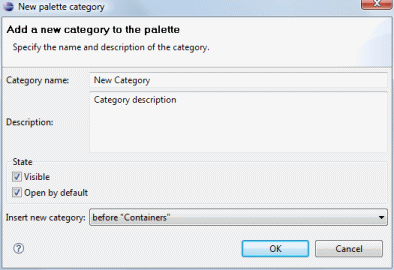 |
|
|
Add component... |
Create a new palette entry representing a user-specified component. The entry
must have a name, class, and a description (visible as hover help in the palette).
If the widget defines its own icon in its bean info, that icon will be
used by default. The component may be initially visible or not and
may be added to any available category.
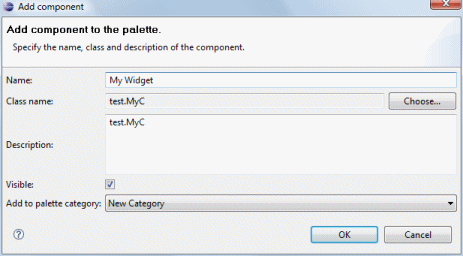 |
|
|
Add static factory > |
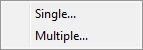Add
components from a static factory. Single factory components may be added
or multiple factory components may be added at the same time.
To add a single factory item, give it a name, select the factory
class and method signature, and give it a description. The component may
be initially visible or not and may be added to any available
category.
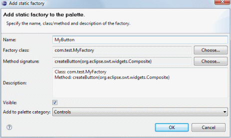
To add a multiple factory items at the same time, select the factory
class and method signatures. The component name and description will be
given default values. The components will be initially visible
and may be added to any available category.
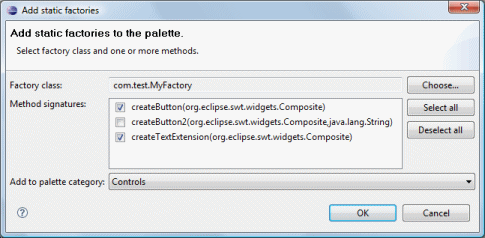 |
|
|
Add instance factory > |
Add
components from an instance factory. Single factory components may be
added or multiple factory components may be added at the same time.
To add a single factory item, give it a name, select the factory
class and method signature, and give it a description. The component may
be initially visible or not and may be added to any available
category.
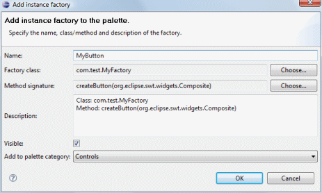
To add a multiple factory items at the same time, select the factory
class and method signatures. The component name and description will be
given default values. The components will be initially visible
and may be added to any available category.
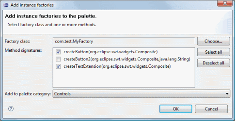 |
|
|
Import Jar... |
Create multiple new palette entries using widget classes from a JAR file
(selected from the classpath, workspace or from disk).
Optionally create a new category to add the entries to. The category
name defaults to the name of the JAR.
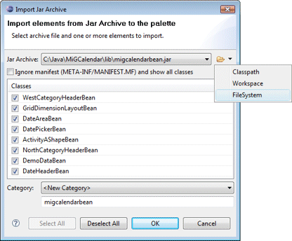
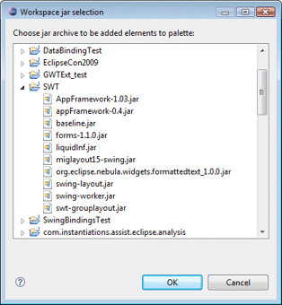
If no widgets appear when you select a jar file, this is usually an
indication that the jar file does not provide a proper JavaBean manifest
readable by Sun's JavaBean manifest reader. Please contact the jar
provider for a correction. As long as the jar is on your project path,
you should be able to add individual widgets to the palette manually by
using the Add Component... command. |
|
|
Edit... |
Edit the selected category or component.
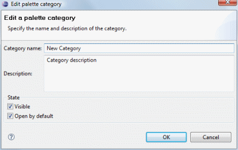
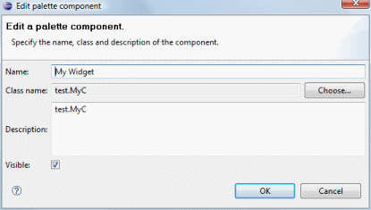 |
 |
Delete |
Delete the selected category or entry. |
|
|
Restore default palette... |
Restore the palette to its default state (and custom widgets will be
removed). |
|
|
Palette manager... |
The Palette Manager dialog allows the toolkit-specific palette to be
fully configured. Categories, and entries may be added,
edited and removed and JAR files imported. Items may be rearranged using the Up and
Down buttons or via drag and drop. The Collapse All
and Expand All buttons show or hide all of the elements in
the list. |
|
|
Import palette... |
Import the current palette in XML format.
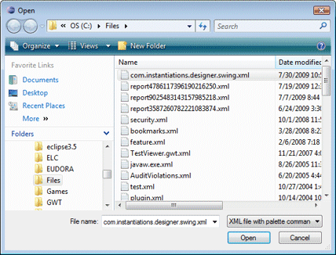 |
|
|
Export palette... |
Export the current palette in XML format.
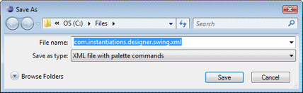 |
|
|
Settings... |
The palette entries may be configured to appear in one to five columns. By
default, each entry is shown with an icon and class name. Optionally,
each entry can be shown with an icon only. Category and entry fonts may
also be selected.
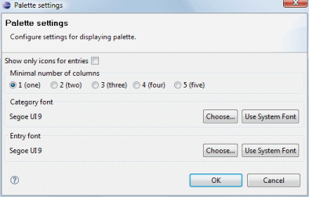 |